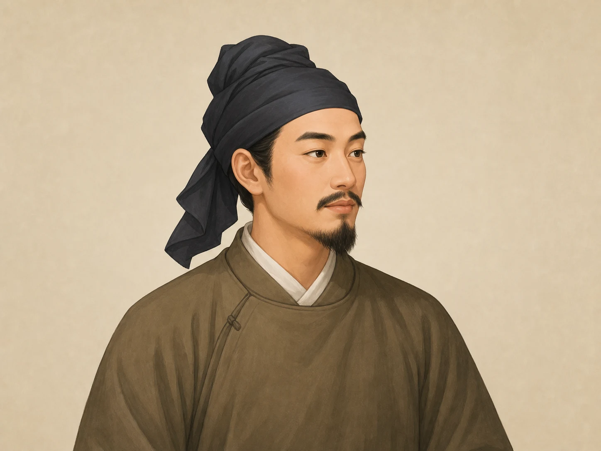
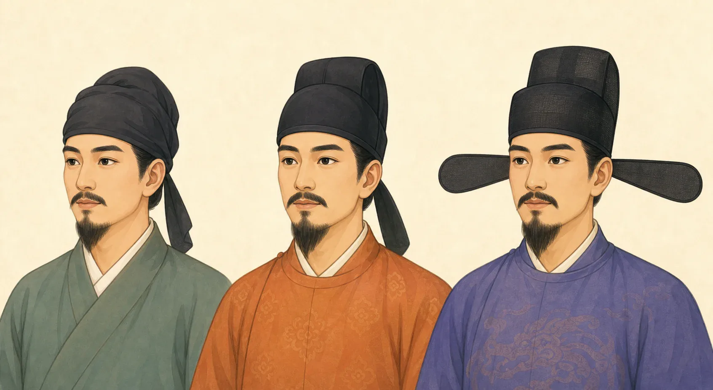
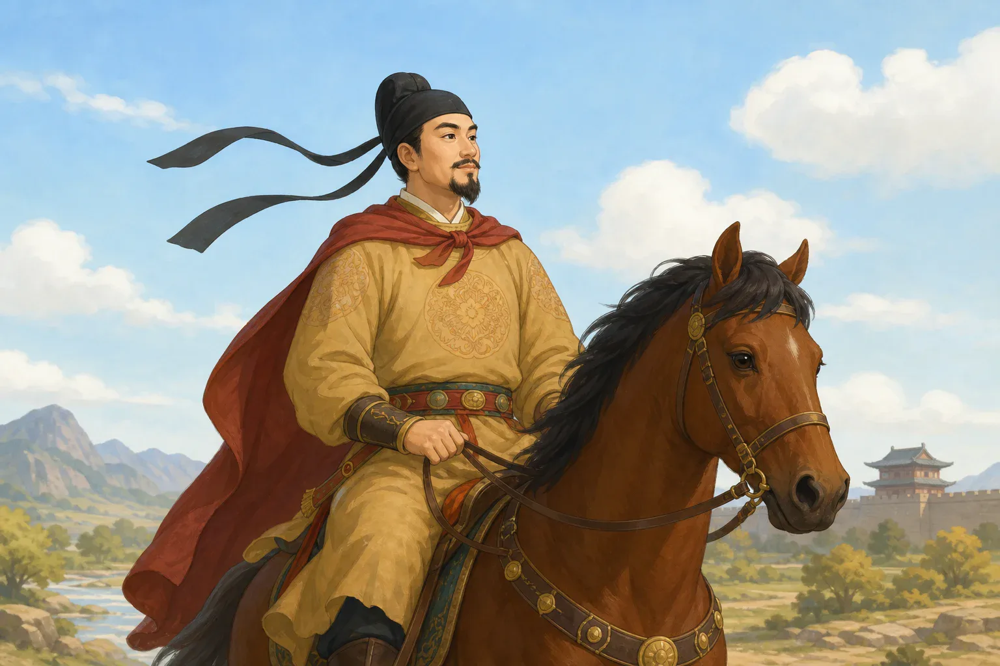

唐朝男子为什么要戴幞头？
Why Did Men in Tang China Wear Futou?
Page 1
为什么他们留着长发？
Why Did Men Keep Their Hair Long?

Soft black cloth covered the hair knot and held long hair neatly in place.
许多唐朝男子留着长发。是因为他们没有剪刀吗？当然不是。唐朝人已经会使用剪刀，今天的博物馆里还保存着唐朝的剪刀。
留长发主要是一种生活习惯和礼俗。古人常说，身体和头发来自父母，应该好好爱护，不能随意损伤。因此，对许多汉族男子来说，把头发剪得很短或全部剃掉，并不是平常的选择。不过，这不等于每个人一辈子都不修剪一根头发。人们会清洗、梳理和照料头发，也有人会剪发或剃发。唐朝生活着来自许多地方的人，不同人群的发式也不完全一样。
长头发总要有地方安放。男子常常把头发梳起来，在头上盘成发髻，再用黑色的布帛或薄纱包住头和发髻。这样，走路、骑马或做事时，头发不会散下来，人也显得穿戴整齐。这种包头的巾帽叫作“幞头”，读作“福头”。
幞头在唐朝以前就已经出现。到了唐朝，它成了男子日常衣服中很常见的一部分。从皇帝到普通百姓，都可能戴幞头。不过，他们戴的形状、材料和场合不一定相同。
Many men in Tang China kept their hair long. Was that because they had no scissors? Not at all. People in Tang China used scissors, and Tang scissors can still be seen in museums today.
Long hair was mainly a custom. Families taught that a person's body and hair came from their parents and should be treated with care. For many Han Chinese men, cutting the hair very short or shaving it all off was not an everyday choice. That does not mean every man went through life without trimming a single hair. People washed, combed, and cared for their hair, and some people cut or shaved it. Tang China was also home to many different communities, so not everyone wore the same hairstyle.
Long hair had to go somewhere. Men often combed it up, tied it in a knot, and wrapped black cloth or thin gauze around the head and hair knot. The cloth kept the hair from falling loose while a man walked, rode a horse, or worked. It also made him look properly dressed. This head wrap was called a futou, pronounced “foo-toe.”
Futou had appeared before the Tang dynasty. During the Tang, they became a common part of men's everyday clothing. Emperors and ordinary people could both wear them, although the shape, material, and occasion were not always the same.
Page 2
一块软布怎样变成帽子？
How Did a Cloth Wrap Become a Hat?

From left to right: an early Tang soft wrap, a later framed futou with its feet still hanging down, and long wing-like feet developed after the Tang.
唐朝延续了将近三百年，足够让流行的帽子改变许多次。较早的幞头像一块有四个布角的头巾。两个角把布系在头上，另外两个角垂在脑后。这两条垂下来的部分被叫作幞头的“脚”。
后来，人们在布里面加了一个支架，叫“巾子”。它罩在发髻上，可以让幞头顶部变高、变圆或变尖。到了唐朝后期，有些幞头又加上比较硬的帽架。这样一来，它更像一顶做好的帽子，需要时可以直接戴上，不必每次都重新对着镜子包布打结。
它会变化，一部分是为了方便，一部分也是因为流行的样子在变。皇宫里出现的新式样也可能被官员和其他人模仿。不过，新式样出现以后，旧式样不会在同一天全部消失。
The Tang dynasty lasted for almost 300 years, which gave fashions plenty of time to change. An earlier futou was much like a headcloth with four corners. Two corners tied the cloth in place. The other two hung down at the back. These hanging parts were called the futou's “feet.”
Later, people added a support inside the cloth. It was called a jinzi and sat over the hair knot. A jinzi could make the top look taller, rounder, or more pointed. By the late Tang, some futou had a firmer frame. A man could put one on like a ready-made cap instead of wrapping and tying the cloth in front of a mirror each time.
The futou changed partly for convenience and partly because fashions changed. New court styles could be copied by officials and other people. But a new shape did not make every older style disappear on the same day.
Page 3
为什么还要戴不同的帽子？
Why Did Men Need Different Headwear?
幞头是日常生活中很常见的头饰，但它不是古代男子唯一的选择。
参加重要典礼的人可能戴正式的冠。士兵披甲作战时，需要能保护头部的头盔。来自不同地区的人也会带来尖顶帽、卷边帽和毡帽。天气、工作、材料、流行和礼仪，都会影响一个人戴什么。
朝廷还会规定某些官员在正式场合应该怎样穿戴。头饰可以帮助别人看出一个人的身份或正在参加什么活动。但是，唐朝从皇帝到普通人都有人戴幞头，所以一顶黑色幞头本身并不等于“这是一个官员”。
Futou were common in daily life, but they were not the only headwear worn by men in old China.
A man at an important ceremony might wear a formal crown. A soldier going into battle needed a helmet that could protect his head. People arriving from other regions brought pointed caps, rolled-brim hats, and felt hats. Weather, work, available materials, fashion, and ceremony could all affect what someone wore.
The court also made rules about what certain officials should wear on formal occasions. Headwear could help show a person's place or the event he was attending. But emperors and ordinary people both wore futou during the Tang. A black futou by itself did not mean, “This man is an official.”
Page 4
骑手身后的长带是什么？
What Are the Long Ribbons Behind the Rider?

The long ribbons come from the futou's two soft “feet.” They are shown longer than usual here so they are easy to see.
幞头脑后的两只“脚”，最早就是系好头巾后留下来的布角。软脚可以自然垂下，骑马有风时也会轻轻飘动。后来，人们把布角加长，还会用丝线或较硬的材料把它们撑起来，于是出现了上翘、交叉和向两边伸展的式样。
这张骑马图把软脚画成了长长飞舞的飘带，主要是为了让画面更有气势。真实的唐朝骑手不一定这样戴，长带也不是将军的标志。真正披甲作战时，保护头部的头盔通常比幞头更重要。
到了唐朝以后，幞头的脚继续变化。宋朝的一些官帽有又硬又长、向两边平伸的帽翅。那是后来特别醒目的式样，不能倒过来说所有唐朝男子都这样戴。
The two “feet” at the back of a futou began as cloth corners left after the head wrap was tied. Soft feet could hang down and move gently in the wind. Later, makers lengthened them or added silk cord and firmer supports. The feet could rise, cross, or stretch out to the sides.
In this riding picture, the soft feet have become long, flying ribbons. The artist made them extra dramatic. A real Tang rider did not always wear them this way, and long ribbons were not a sign that someone was a general. In a real battle, a protective helmet usually mattered more than a futou.
Futou feet continued to change after the Tang. Some official hats in the Song dynasty had long, stiff wings that reached out to both sides. That later style became famous, but it was not the hat of every Tang man.
Page 5
幞头不只属于大人物
Futou Were Not Just for Important Men
中国国家博物馆收藏着一件唐朝牵马俑。陶俑表现的是一个照看马匹的人，他穿着方便活动的窄袖衣服，头上也戴着幞头。唐朝的画和陶俑中，官员、侍从、表演者和做各种工作的人都可能戴它。
幞头到底有多常见？博物馆的介绍里还有一个很好玩的例子：有些相扑表演者身上几乎没有穿衣服，头上却还是认真裹着幞头。
对许多唐朝男子来说，幞头不是只有上朝或参加典礼才拿出来的宝贝。它先收好头发，再跟着主人去工作、牵马，甚至参加一场摔跤表演。
The National Museum of China has a Tang clay figure of a horse handler. He is not an emperor or a great general. He wears narrow sleeves that make movement easier, and he has a futou on his head. In Tang paintings and clay figures, officials, attendants, performers, and working men may all wear futou.
How common were they? The museum gives one especially funny example. Some wrestlers performed with almost no clothing on, yet they still carefully wrapped futou around their heads.
For many Tang men, a futou was not something precious that came out only for court or a ceremony. It held the hair in place, then followed its wearer to work, to the horses, and even into a wrestling match.